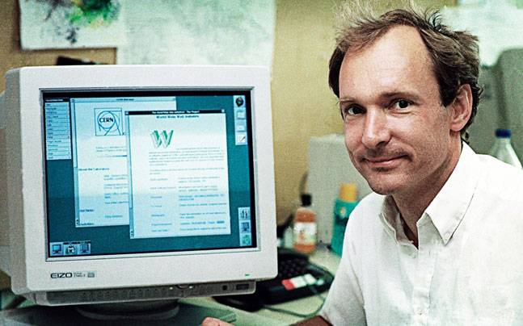

Tim Berners-Lee
El arquitecto de la web

Tim frente a una pc con programas sobre la world wide web
Este británico que habita en los Estados Unidos, fue quien escribió el primer servidor World Wide Web, el Protocolo de transferencia de hipertexto (HTTP), concepto fundamental para la difusión masiva de Internet, en 1990.
Citas y frases célebres:
- Gobiernos y empresas frenan el avance de la web.
- Cuando inventé la web, no tuve que pedirle permiso a nadie. Ahora, millones de personas la utilizan libremente. Me preocupa que todo eso se vaya a acabar en los Estados Unidos de América
- La leyenda cuenta que cada nueva tecnología se utilizó por primera vez con algo relacionado con el sexo o la pornografía. Ese parece ser el camino de la humanidad
- Cualquier persona que pone en una página web una etiqueta diciendo “esta página se ve mejor con el Navegador X” parece tener el anhelo de los malos viejos tiempos, antes de la web, cuando tenía muy pocas posibilidades de lectura un documento escrito en otro equipo, en otro procesador, o en otra red
- Sólo tuve que tomar la idea de hipertexto y conectarlo con las ideas de TCP y DNS y —¡ha-la!— la World Wide Web
- La web es más una creación social que técnica. La diseñé para un efecto social —para ayudar a las personas que trabajan juntas— y no como un juguete técnico. El objetivo último de la web es apoyar y mejorar nuestra existencia en la telaraña mundial. Nos agrupamos en familias, asociaciones y empresas. Desarrollamos la confianza a grandes distancias, y la desconfianza a la vuelta de la esquina
"La poderosa economía digital exige estándares sólidos que equilibren los intereses de las empresas y los ciudadanos online. Esto implica pensar cómo alineamos los incentivos del sector tecnológico con los de los usuarios y la sociedad en general" - Tim Berners-Lee